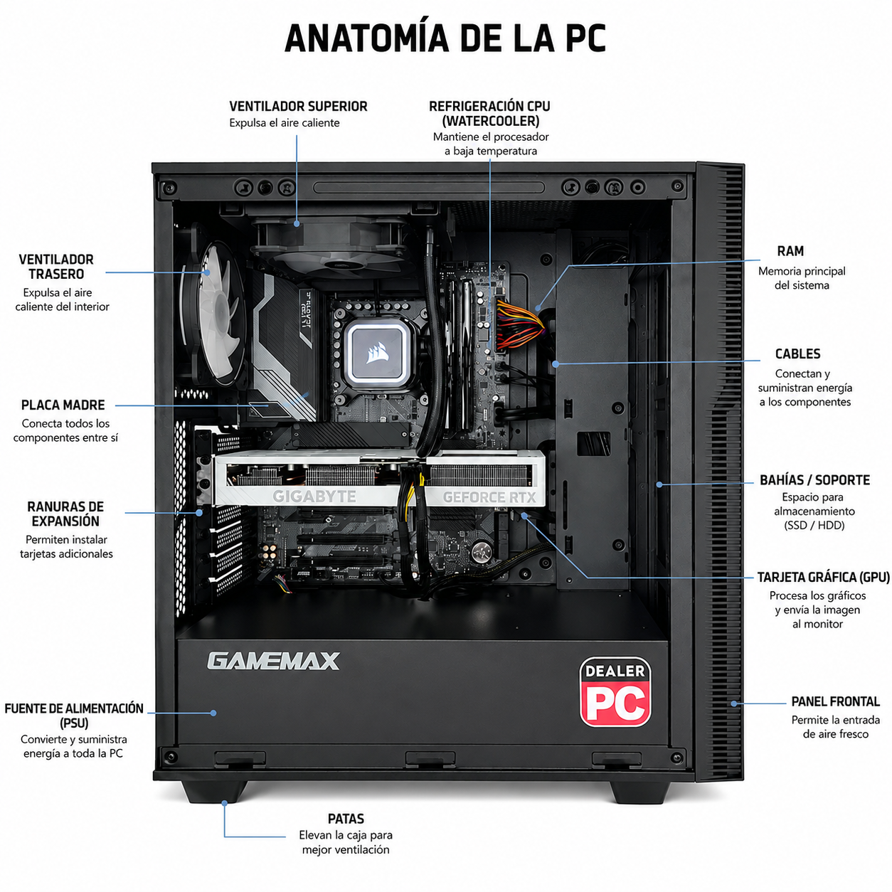

Anatomía de una PC

¿Para qué queremos la PC?
Esto es para saber si la queremos para jugar, trabajar o estudiar. Son usos muy distintos y pueden cambiar drásticamente el precio final de la PC.
Elige el sector sobre el que quieres información: